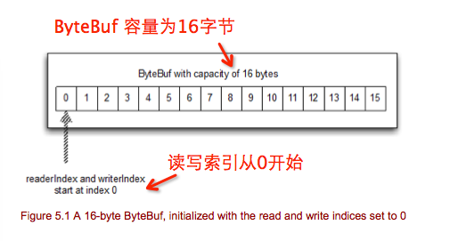
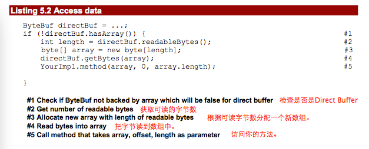
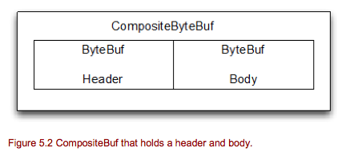
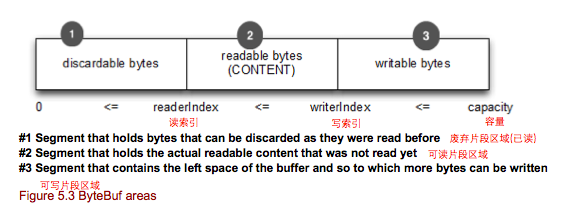
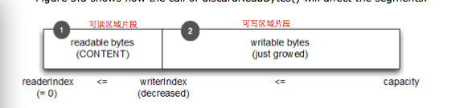

(翻译很生硬，仅做互相学习交流使用，发现问题欢迎反馈。)
Netty的Buffer API 包含两个接口:
Netty使用“引用计数”的方法来知道什么时候安全释放一个Buf及其声明的资源。理解Netty使用“引用计数”这是非常有用的，他的所有处理都是自动的。 Netty使用缓存池和其他技巧来加速并且保持内存使用率合理的水平。对于上述你不需要去做任何事情，但是当你去开发一个Netty的应用，你应该尽快去处理你的数据并且释放缓存池的资源。
Netty的Buffer API 提供几个优势:
在本章的最后一节我们深入来探讨一下这些优势，包括缓存池。让我们从字节容器开始，这个可能是第一个需要的。
每当你需要远端交互时，比如数据库，其相互通讯都是需要用字节来完成的。对于这点和其他原因来说，一个高效，方便和有用的数据结构是必须的，Netty的ByteBuf实现和满足这些要求，做成一个最合理的数据容器，优化用字节处理和交互。
ByteBuf是一个高效读写字节的数据容器。这样的读写操作非常简单，他提供了读写两个索引。允许你按顺序读取数据和跳回重新读取数据。你只需要调整读索引然后开始重新读操作。
在一些数据写入到ByteBuf，他的writeIndex根据写入的数量自动增长。在你开始读取数据之后，他的readerIndex索引也会自己增长。你可以读取从readerIndex到writerIndex之间的字节。当readerIndex和writerIndex位置相同时,ByteBuf是不可以读取的，所以继续读取会引发IndexOutOfBoundsException异常，类似读取超过数组容量的现象。
访问Buffer的任何方法开始读写，读写索引都会自动的移动。还有些相关的操作比如“set”和“get”字节也是一样的会自动更新对应的读写索引。这些都不需要去自己再去移动相关的索引，但是操作相关的索引是可以的。
一个ByteBuf有一个最大的容量来设置可以处理的最大的数据的上限，试图移动读写索引超过最大容量将会获得一个异常。默认最大限制是Integer.MAX_VALUE.
从图5.1可以看出，ByteBuf类似一个字节数组，最大的不同就是增加了能控制访问buffer数据的读写索引。
在后面的章节，你将学习到更多ByteBuf可执行的操作。现在，让我们来回顾一下你最可能用到不同类型的ByteBuf。
当你用Netty时，你会遇到三种不同的ByteBuf类型(有更多的类型，但是都是内部使用)。你可以终实现自己的ByteBuf，但是这已经超出我们讨论的范围。让我们看看，你最有可能感兴趣提供的类型。
最常用到的ByteBuf类型是存储在JVM的堆内存中。这是通过将存储在一个底层数组实现的。当你没有用到缓存池，这种类型是很快的分配和销毁的。他当然也提供直接访问底层数组，这使得很容易的与原来编写的代码整合。访问不是堆ByteBuf的数组将会抛出UnsupportedOperationException异常。正因如此，所以最好每次都用hassArray()方法检查是不是底层数组。如果你曾今用过JDK的ByteBuffer你会觉得这种模式非常熟悉。
其他的ByteBuf的实现都是Direct Buffer。Direct的意思就是在分配内存时直接从JVM堆内存以外的主存中分配。在堆内存中你看不见内存的使用情况。你必须考虑计算你的应用将会用到的最大内存以及如何限制的使用他，只考虑最大堆大小是不够的。当在socket传输数据的时候，使用Direct Buffer是最佳的选择。事实上，如果你使用非Direct buffer，JVM内部将从你的Buffer中拷贝到Direct Buffer，然后再在socket中传输。
Direct Buffer在分配和销毁方面要比heap buffer昂贵的多。这也是为什么Netty支持缓存池来消除这些问题的一个原因。你不能通过底层数组来访问这些数据，所以，如果你需要兼容原来的代码，你必须拷贝这些数据。
下面将展示，在没有访问底层数组的情况下，你如何获取数组中的数据并且调用你的方法。
正如你看到的，Direct Buffer 需要更多的工作，涉及到复制操作。如果你希望访问数据是一个数组，你最好使用heap buffer。
最后一个ByteBuf的实现是CompositeByteBuf。从他的名字就知道是什么意思，他可以组合不同的ByteBuf实例，并且提供基于其不同实例之上的一个视图。你还可以即时的增加和删除这些ByteBuf实例，就像一个List一样。如果你以前使用JDK的ByteBuffer，你会发现你错过了这些功能。CompositeByteBuf只是一个基于其他ByteBuf之上的视图，这个hasArray()方法将会返回false,因为他包含了几个Direct 和 非Direct类型的ByteBuf实例。
例如，一条消息由heade和body两部分组成。在模块的应用程序中，当消息发送出去后，这两部分可能被不同的模块生成和组装。你也可以一直使用同一个body,而仅仅改变header。所以，这也让我体会到，这里任何时间都没有分配一个新的的buffer。
CompositeByteBuf非常完美，他不需要内存拷贝，而且提供非组合buffer相同的API。
下图展示一个CompositeByteBuf如何用来组成header和body。
如果你使用JDK的ByteBuffer,这些是做不到的。他仅仅有一个方法去组合两个ByteBuffers，就是拷贝他们两个ByteBuffer中的内容到一个新创建的数组或者ByteBuffer中。 下面代码展示了这些操作原理。
Listing 5.3 Compose legacy JDK ByteBuffer
// Use an array to composite them
ByteBuffer[] message = new ByteBuffer[] { header, body };
// Use copy to merge both
ByteBuffer message2 = ByteBuffer.allocate(

message2.put(header);
message2.put(body);
message2.flip()
从上面代码我们可以看出有几个不利条件：如果支持两个Buffer操作，不能保持原来简单的API。使用内存拷贝来完成关联两个buffer是有性能消耗的。这样很简单，但不是最佳的处理方式。
让我们看看CompositeByteBuf的使用。如下所示：
Listing 5.4 CompositeByteBuf in action
CompositeByteBuf compBuf = ...;
ByteBuf heapBuf = ...;
ByteBuf directBuf = ...;
compBuf.addComponent(heapBuf, directBuf); #1
.....
compBuf.removeComponent(0); #2
for (ByteBuf buf: compBuf) { #3
System.out.println(buf.toString());
}
#1 Append ByteBuf instances to the composite (追加ByteBuf实例到组合Buffer)
#2 Remove ByteBuf on index 0 (heapBuf here) (移除第一个ByteBuf)
#3 Loop over all the composed ByteBuf (循环所有的组合ByteBuf)
CompositeByteBuf里面还有更多的方法，但是我认为你会很容易看明白是什么意思。Netty的API都有很清楚的描述，以便你使用未演示的其他方法。参照API文档很容易的理解他们是做什么的。
因为CompositeBytebuf的性质，你将无法访问底层实现数组。
Listing 5.5 Access data
CompositeBuf compBuf = ...;
if (!compBuf.hasArray()) { #1
int length = compBuf.readableBytes(); #2
byte[] array = new byte[length]; #3
compBuf.getBytes(array); #4
YourImpl.method(array, 0, array.length); #5
}
#1 Check if ByteBuf not backed by array which will be false for a composite buffer (检查不是底层数组实现)
#2 Get amount of readable bytes （获取可读的字节数）
#3 Allocate new array with length of readable bytes (分配可读字节数长度的数组)
#4 Read bytes into array （读取字节到数组中）
#5 Call method that takes array, offset, length as parameter(访问数组)
CompositeByteBuf是ByteBuf的一个子类，你可以像正常的ByteBuf操作,他还提供其他额外的操作。
Netty使用CompositeByteBuf会尽可能的优化在socket上的读写操作。这就意味着Netty使用聚散读写socket是不会有性能的损失，或者从JDK内存泄漏问题受到影响。所有的这一切在Netty的核心里已经做了，所以你不用担心太多。
CompositeByteBuf类并不存在JDK中，他只是提供了比JDK java.nio包中的Buffer API 更丰富的功能。
ByteBuf提供了很多操作，他允许修改读取内容。你将很快的掌握他，他提供了更好的用户体验和性能。
像一个普通的原始字节数组，ByteBuf使用从零开始的索引。这就意味着第一个字节的索引总是0，最后一个索引总是(容量-1)。可以迭代读取Buffer所有的字节(如下代码所示)，不需要知道其内部如何实现。
Listing 5.7 Access data
ByteBuf buffer = ...;
for (int i = 0; i < buffer.capacity(); i ++) {
byte b = buffer.getByte(i);
System.out.println((char) b);
}
从上面代码我们可以知道，读取数据时并没有使用readerIndex和writerIndex索引。如果你需要，你可以通过调用readerIndex和writeIndex索引来访问其内部数据。
ByteBuf提供两个指针变量来实现顺序读写操作，readerIndex用于读操作，writeIndex用于写操作。这里再次和JDK的ByteBuffer不同，JDK的ByteBuffer只有一个指针，所以需要flip()方法来切换读写模式。下图显示了被两个指针分成三个区域片段。
可废弃的字节片段是已经读取过的，所以他是可丢弃的。刚开始，可废弃片段大小为0，但是他的大小随着读操作增加。这里只包含“read”操作，“get”操作是不会移动readerIndex索引。读过的片段可以通过调用discardReadBytes()方法来清除未用空间。
下图是在调用discardReadBytes()方法之前的 ByteBuf片段。
正如你看到的，可废弃片段区域包含了一些空间，他可以重新使用。我们可以通过调用discardReadBytes()方法来重新使用这些空间。
下图是调用discardReadBytes()后的ByteBuf片段。
要注意在调用discardReadBytes()之后，有没有保证可写字节内容。在大多情况下，可写的字节不会被移动，根据不同的buffer实现，甚至可以填充完成不同的数据。
当然，你可以平凡调用discardReadBytes()方法提供更多可写的空间。请注意，调用discardReadBytes()方法有可能涉及一个内存拷贝，因为它需要将可读的字节（内容）到ByteBuf开始。这些操作是影响性能的，所以当你需要他或者从中获益时才使用他。因此你需要尽快的释放内存。
(待续。。。)